Kontakt: Building the CCC-C Piano
- Table of Contents
What you’ll build
You’ll create a custom Kontakt instrument with a UI, three mix layers (Clean, Bloom, and Drone), round robins, and DAW automation. By the end, you will have an solid example of how to build your own custom Kontakt instruments.
Build Video
Here is a video I recorded of myself building this instrument.
⚠️ The way I build the instrument in the video is not identical to the way it is built in this document. Their are minor difference in how I write the script. Also, the audio quality in this video is less than ideal. I had a limited time to record/edit this video so it is what it is.
Setup the instrument “Build” Folder
Note
What all goes in our “Build” folder?
I use a two fold system for containing and organizing the two stages of developing a custom Kontakt instrument.
- Stage One: Build
- Stage Two: Release
I always start a new custom Kontakt instrument by creating a folder “Build” folder to place the instrument and all its resources within. When I finish building the instrument, I’ll create a new folder for placing all the resources need to share the final instrument with others.
File types
Kontakt has several of its own files types.
.nki- a Kontakt Instrument.nkr- a resource file containing pictures, scripts, impulse responses and other resources the instrument may need except for the audio samples.
- When you are building a Kontakt instrument you will place all the things your instrument uses in the
Resourcesfolder. Before you share a completed Kontakt instrument you will “pack” all the contents of theResourcesfolder into a.nkrfile and then share you instrument along with its related.nkrfile..ncw- a compressed.wavfile only readable by Kontakt. A simple, but effective method to protect your samples from being reused outside of your Kontakt instrument.- There are a few other file types and folders that will appear in the “build” folder as we create our instrument but the ones listed above are the only ones that we are concerned with.
-
Start by creating an empty folder called
CCC-C_Piano - Build -
Then open Kontakt and create a new empty instrument.
-
Save this instrument inside the
CCC-C_Piano - Buildfolder.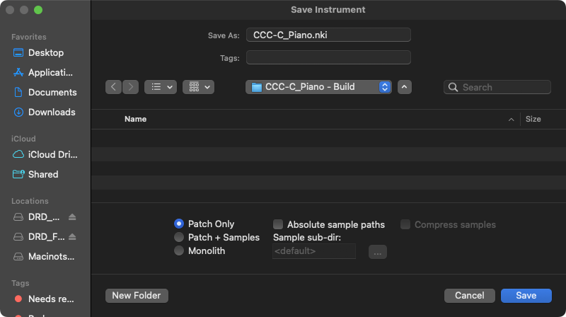
-
Next, create a Resources folder for the instrument by opening the newly created instrument in Konakt via the wrench icon and clicking the
Createbutton found on theInstrumenttab of the theInstrument Optionswindow.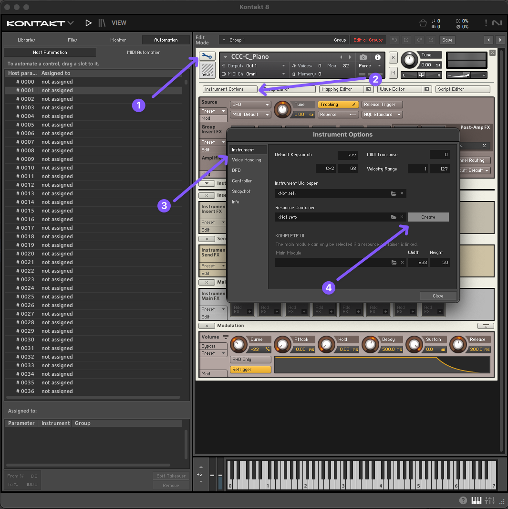
-
Your
CCC-C_Piano - Buildfolder should now look like this.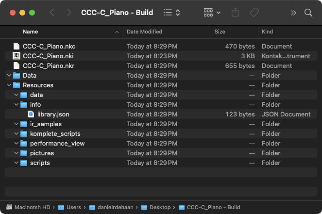
-
Download, unzip, and place the piano samples in the
CCC-C_Piano - Buildfolder. -
Download, unzip, and place the contents of the .zip file below in the
CCC-C_Piano - Build/resources/pictures -
Your
CCC-C_Piano - Buildfolder should now look like this: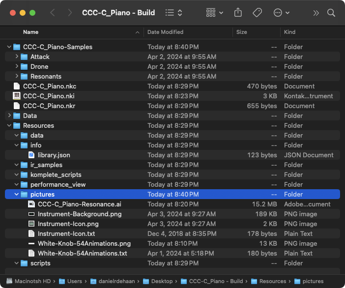
Import & Auto Map the Samples
In the next step we’ll import all our samples into our Kontakt instrument’s Mapping Editor window. Then we’ll use Kontakt’s Auto Map feature to automatically move all of these samples into specific groups and key ranges based upon their file names. So for this step, the only thing that matters is that you get them all in to Kontakt.
-
Open the
Mapping Editorin Kontakt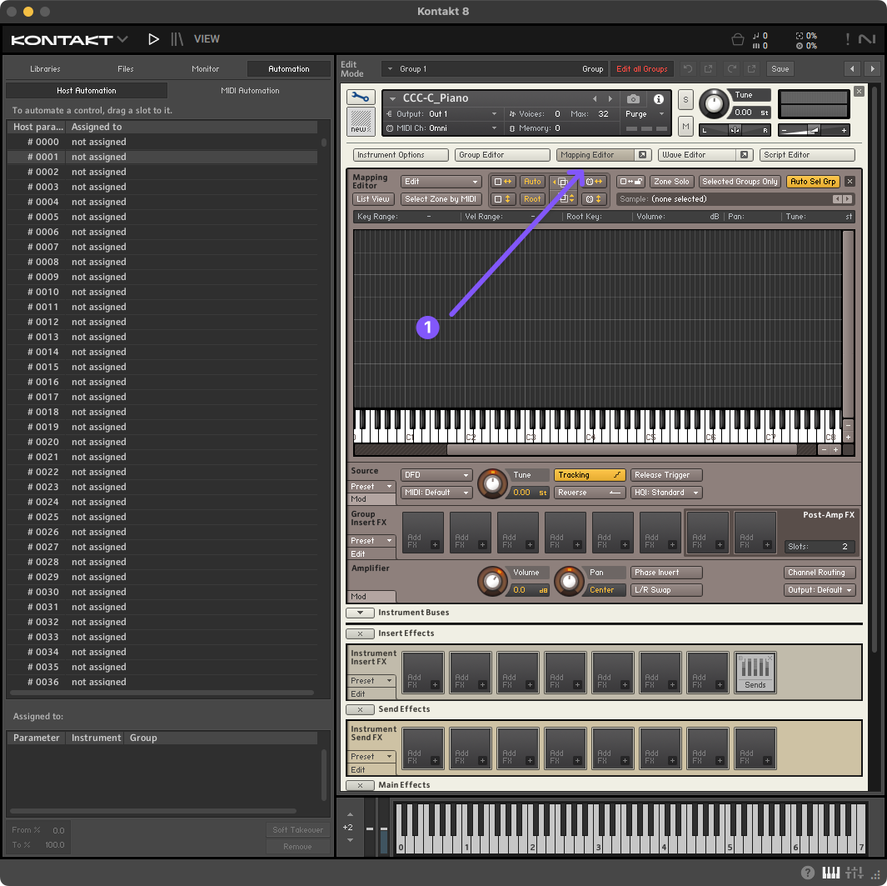
-
Drag and drop all the samples contained inside the
CCC-C_Piano-Samplesfolder that you previously downloaded and moved in the theCCC-C_Piano - Buildfolder in theMapping Editorwindow. The end result should look something like this: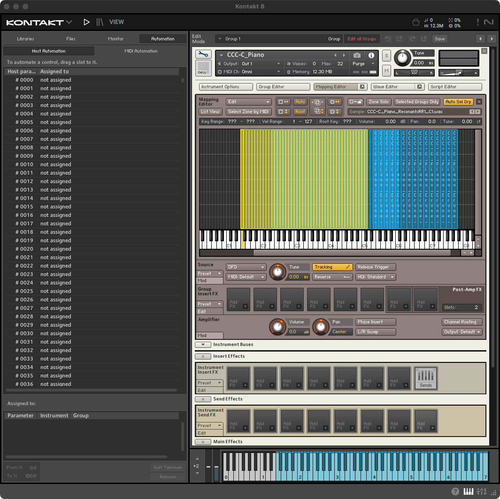
-
Next, select all the samples in the
Mapping Editorby open clicking and dragging across all of them.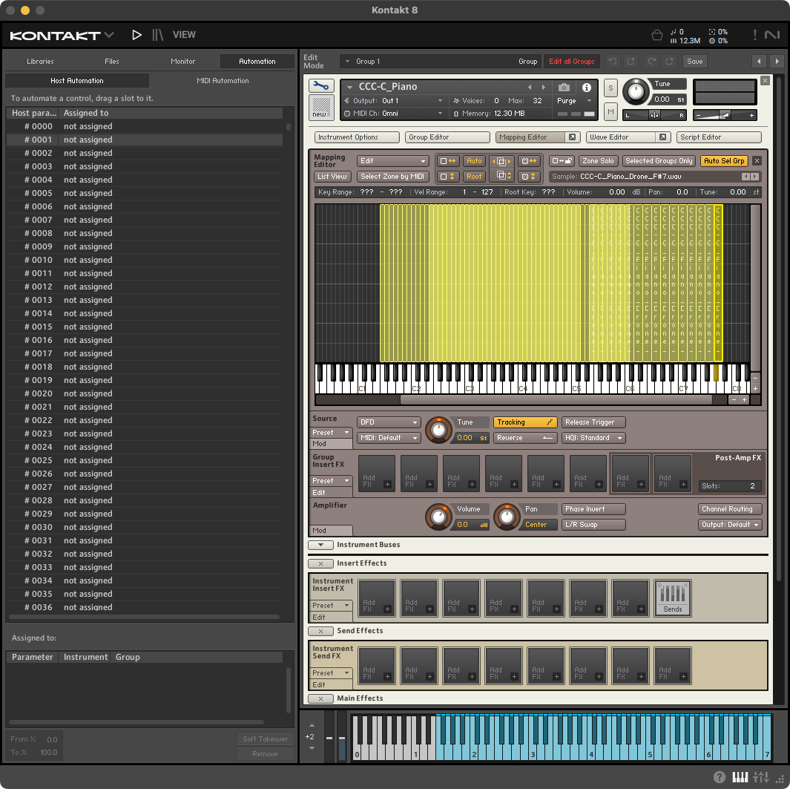
-
Then open the
Auto Map Setup Window…
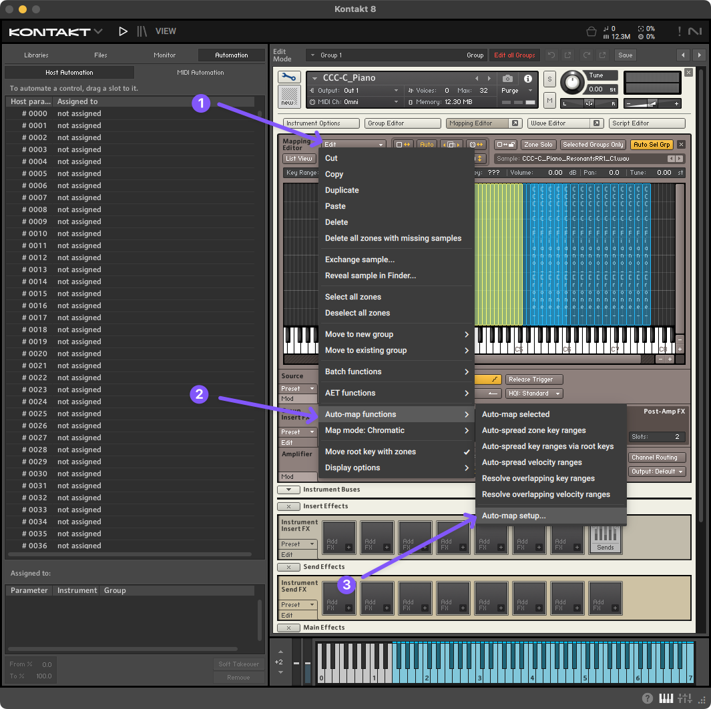
- …And configure the
Auto Map Setup Windowto use the last two parts of the file name toMake Group NameandSet to single key. Then clickApplyandClosethe window.
The Auto Map Setup Window will always show you the name of the last file you selected in the Mapping Editor so you may have a different file name displayed from the image below, but that shouldn’t matter.
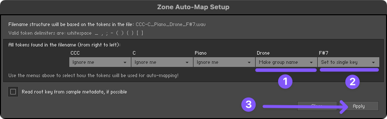
-
Kontakt’s auto map feature almost never maps all the samples the first time you click
Apply. To make it easier to see when all your samples are mapped, open Kontakt’sSide Panewindow and navigate toMonitor>Groups.From this window you can see all the groups in your Kontakt instrument and how many samples (a.k.a. “Zones”) have been auto mapped into each group.
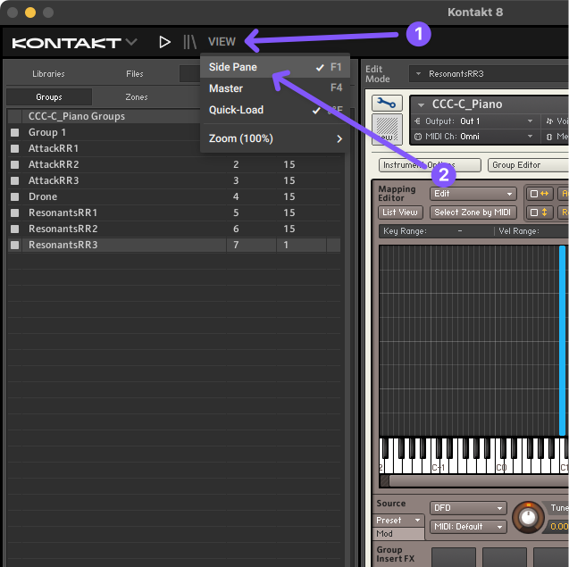
- Continue clicking the
Autobutton in theMapping Editorwindow until there are noZonesremaining in the initialGroup 1.
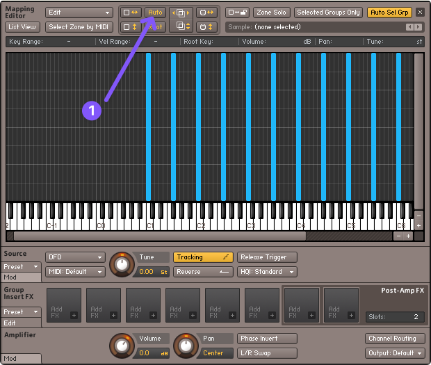
-
Once all the samples are mapped into their correct group and key, select all the samples in the
Mapping Editorand extend their ranges down to cover the notes below each samples.
Info
Why should you always extend the range of the samples down and never up?
First, when you select a sample (a.k.a. “Zone”) in the
Mapping Editoryou can see ust above the mapping area things like that sample’sKey Range,Vel(ocity) Range, andRoot Keyas well as make adjustment’s to it’sVolume,Pan, andTune.While one thing the
Root Keymay indicate is the pitch of the recorded sample, what it really indicates is the MIDI note at which the sample would play back at it original rate. If, for example, you have a sample with it’sRoot Keyset toC3but itsKey Rangeextends fromC2toC4it will be triggered by any incoming MIDI note in that range. However, it will playback faster or slow based upon if the incoming note is higher or lower than itsRoot KeyofC3. If the incoming note isC4the sample will playback 2x faster. If the incoming note is insteadC2the sample will playback at half of it original rate.If you have ever sped up an audio recording you know that it sounds funny. So in order to avoid making our instruments sound like chipmunks, its general best practice to only ever extend a sample
Key Rangebelow itsRoot Keyand never above. You should experiment with this for yourself. I’ve found that you can have a sample cover aKey Rangeof about a augmented 4th before it starts to sound altered.
Setup the Development Environment
Note
What each tool is for
You could do all your development in Kontakt…but you really don’t want to. Kontakt is a great instrument player but not a good code editor. And since we’ll be writing a couple hundred lines of code…it will be nice to use software like VS Code to make this process easier. So in the next steps, we’ll get ourselves setup with the three pieces of software we need while building Kontakt instruments.
- Kontakt: For building and testing our instrument.
- VS Code: For writing our KSP scripts.
- Creator Tools: For enabling live updates between the script we write in VS Code and our Kontakt instrument.
-
Download, install, and open Visual Studio Code
-
Install the “KONTAKT Script Processor (KSP)” extension in Visual Studio Code
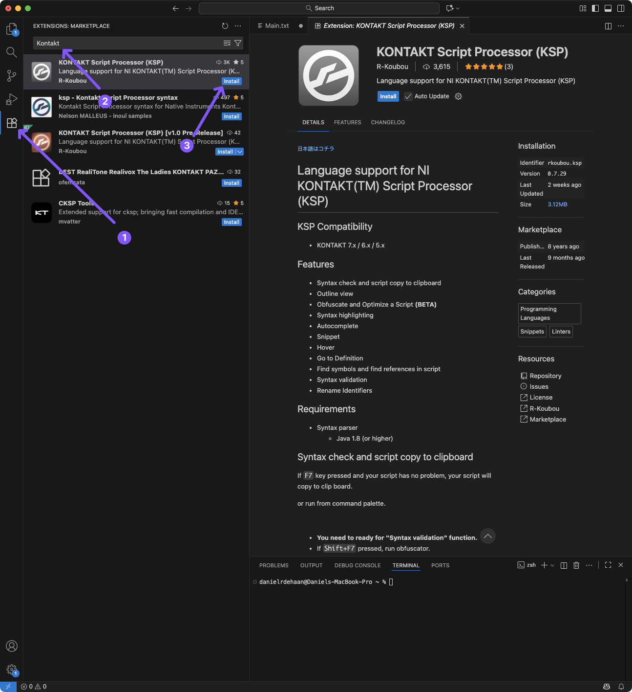
-
Download, install and open Creator Tools via the Native Access app.
Create and connect the Main script to the Instrument
-
In Visual Studio Code, create a
New text file...and save it asMain.txtinCCC-C_Piano - Build/resources/scripts/ -
Set the language for you new
Main.txtfile to beKSPby clicking onPlain Textin the lower right corner of the Visual Studio Code window. Then search for “KSP” in the pop-up box that appears, selecting “KONTAKT Script (KSP)” and pressingReturn.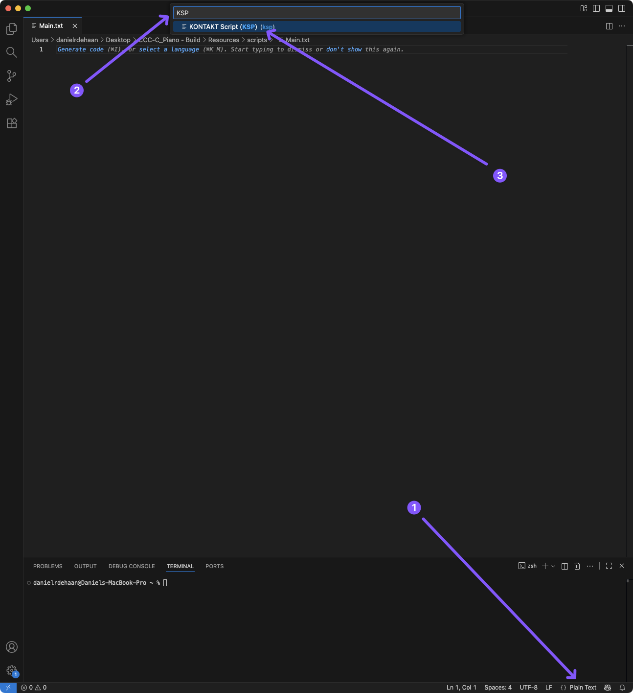
-
Connect the script to your Kontakt instrument by opening the
Script Editorwindow in your Kontakt instrument, loading, and applying theMain.txtscript to the first script slot.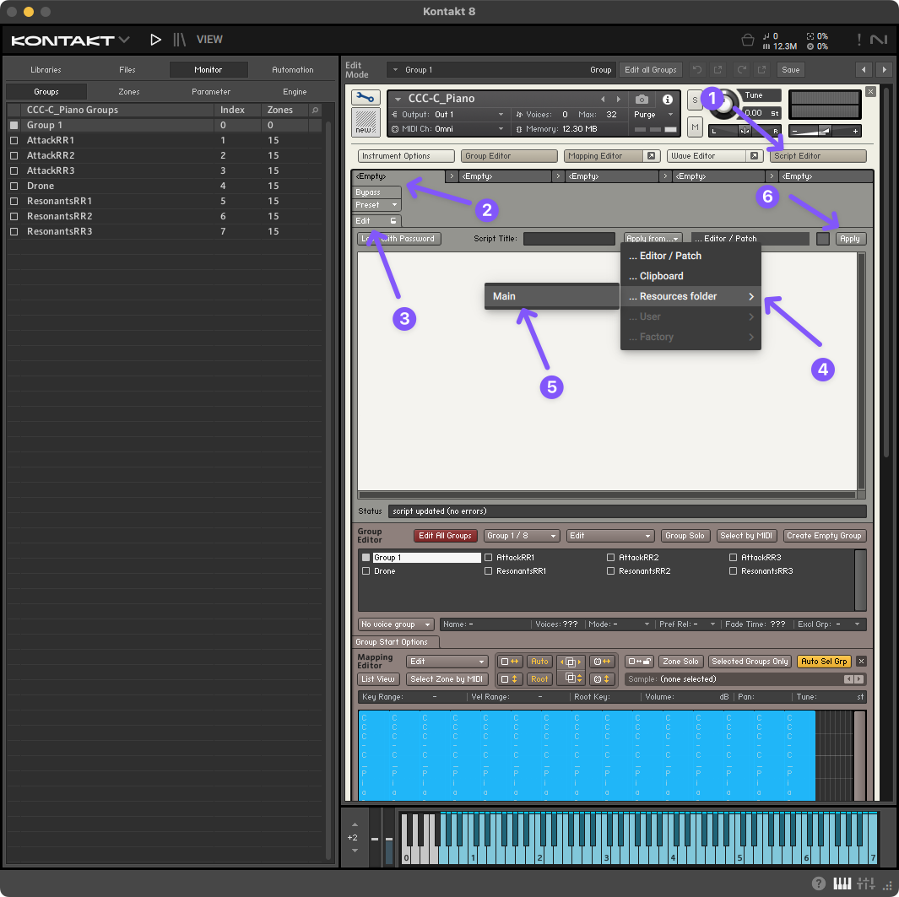
Introduction to Programming and KSP
When we write code, we are giving a computer a structured set of instructions to follow — kind of like creating a highly detailed recipe. These instructions are written in programming languages, each with its own rules (called syntax) and strengths depending on what we want to create. A script is simply a small program: a collection of commands that automate actions, make decisions, or create interactive behaviors inside a specific piece of software.
At their core, most programming languages share a set of common concepts:
- Variables store information so the program can remember and use it later.
- Functions are reusable bundles of instructions that make our code more organized and powerful.
- Logic (like if/then decisions) helps the program respond to what’s happening.
- Events can trigger code when something specific occurs — like a key press or a change in a parameter.
These building blocks allow us to create dynamic, interactive systems that respond in real time.
Kontakt’s KSP (Kontakt Script Processor) language gives us the ability to shape the behavior of an instrument beyond the samples themselves. With KSP, we can control how notes trigger, automate effects, add performance features, customize interfaces, and even design entirely new workflows inside Kontakt.
Introduction to Programming and KSP
When we write code, we are giving a computer a structured set of instructions to follow — kind of like creating a highly detailed recipe. These instructions are written in programming languages, each with its own rules (called syntax) and strengths depending on what we want to create. A script is simply a small program: a collection of commands that automate actions, make decisions, or create interactive behaviors inside a specific piece of software.
Key Concepts in Code
At their core, most programming languages share a set of common building blocks:
- Variables — containers that store information (like numbers, text, or states)
- Functions — reusable bundles of instructions that perform useful tasks
- Logic & Control Flow — if/then decisions and loops that change behavior dynamically
- Events — triggers that run code when something specific happens
These concepts allow us to create interactive systems that respond in real time.
What is KSP?
Kontakt’s KSP (Kontakt Script Processor) language gives designers the power to control how an instrument behaves. With KSP, you can:
- Control how and when samples are triggered
- Build performance features (like key switches, expression control, and legato rules)
- Create custom user interfaces (buttons, sliders, menus, etc.)
- Automate effects, parameters, and behaviors during playback
KSP runs inside the instrument — meaning scripts update immediately as the performer interacts with the instrument.
KSP Features You’ll Use Frequently
To help you feel confident before writing your first line of code, here are the main features of KSP you’ll encounter:
Callbacks (Event-Driven Code)
KSP scripts respond to callbacks, which are blocks of code that execute when specific events happen. Some common ones:
-
on note— runs every time a key is pressed -
on release— runs when a key is released -
on init— runs once when the instrument loads -
on controller— responds to MIDI CC dataCallbacks are where most of your scripting work will live.
Variables & Data Types
Unlike some languages, KSP uses a limited set of data types:
- Integers — whole numbers
- Arrays — lists of integers
- Strings — text for UI and labels only
You create variables to store things like velocity, sample selection, or condition states.
Control Statements
KSP supports the essential decision-making tools:
if / else— run different code depending on conditionswhileloops — repeat actions until something changesselect / case— a clean way to handle multiple choices
You’ll use these to control how the instrument behaves based on input.
Common Built-In Functions
KSP includes a library of functions to interact with Kontakt:
play_note()— triggers samples with custom pitch/velocityset_engine_par()— control effects & playback behaviorset_control_par()— modify UI elements dynamicallymessage()— great for debugging!
These functions allow your script to influence sound, playback, and interface details directly.
UI Controls & Interaction
You can build interfaces using commands like:
-
declare ui_knob,ui_button,ui_menu, etc.These allow musicians to manipulate what your script does in real time.
Create the Performance View
Nearly all Kontakt scripts start with the on init callback. Everything that is placed within on init and end on will be performed every time the instrument is loaded. Anything that needs to exist within our script must be created within the on init callback. For our script, we’ll start by just giving our instrument a “performance view” indicating that our instrument will have a user interface with things like buttons, sliders, or knobs.
-
Add the following lines at the top of your
Main.txtscript.on init make_perfview end on -
Save your
Main.txtscript and click on the wrench icon to confirm that your instrument now has a small performance view.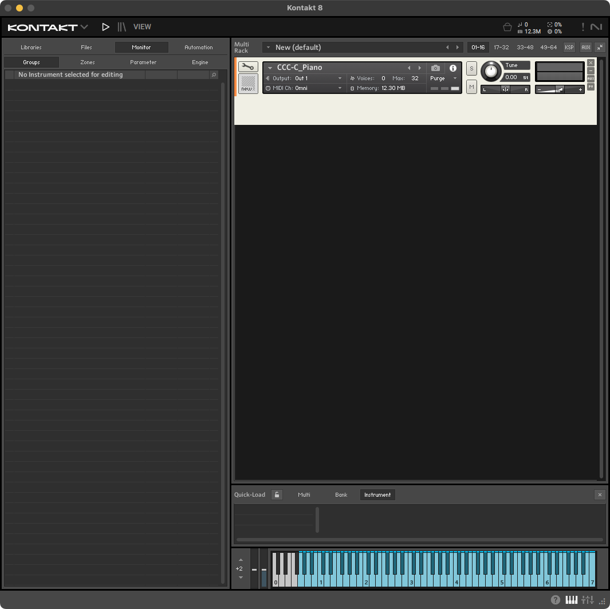
Setting the dimension of the instrument’s user interface
Tip
Coding Concepts
Function are abilities our script has. These can be either defined (created) by us, or provided by Kontakt’s scripting language. Next we’ll add our first function
set_ui_height_px( 260)which sets the height of our instrument user interface to be 260 pixels tall. Some functions expect, or can accept additional pieces of information known as arguments. These arguments are placed inside the parentheses that follow the name of the function and if there are multiple they will be separated by a comma.In this case the function
set_ui_height_pxexpects one argument which will specify the number of pixels we want the heigh of the user interface to be. Later in our script we’ll see example of functions that require more than one argument.
-
Inside the
on initcallback just below themake_perfviewline set the height of the instrument’s user interface by adding the following lineset_ui_height_px( 260 )This makes the user interface
260pixels tall.Here is what your script should look like now.
on init
make_perfview
set_ui_height_px( 260 )
end onYour instrument should now look like this.
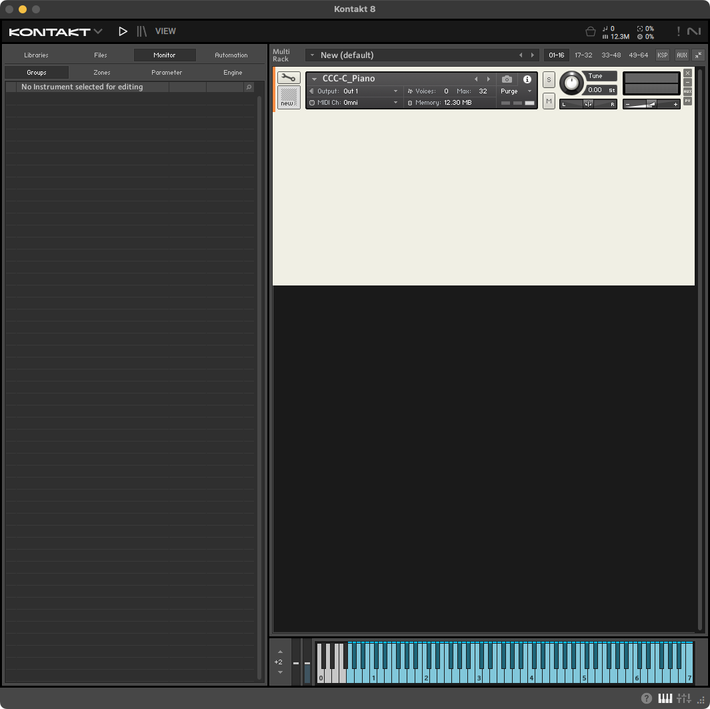
Adding a background image
Tip
Coding Concepts
Variables
Variables, as we learned earlier, are named pieces of data that get used throughout our scripts. These variables can be of different types (e.g. integers, text (strings), arrays (collections of data), etc.) In Kontakt we will use a mixture of of variables that we either define ourselves in the
on initcallback or that are provided for us as a part of KSP.In KSP the symbol at the start of a variable’s name indicates the type of data that is stored within that variable. For example,
$indicates that the variables hold a integer.Style
To help visually differentiate between the variables we define and those provided by KSP always user lowercase letters when naming your own variables (e.g.
$my_variableand all uppercase when referencing a KSP defined variable (e.g.$INST_WALLPAPER_ID).You can find a list of all the KSP defined variables in the KSP Reference Manual.
You’ll see in the next line of code that we will use several KSP variables as arguments to the
set_control_par_str()function. Setting Instrument Control ParametersThere are several variation of the
set_control_parfunction. In our script we will use:
set_control_par(): Sets a control parameter to a number value passed as the final argument.set_control_par_str(): Set a control parameter to a text (string) value passed as the final argument.You can learn more about the
set_control_par()function in the KSP reference manual.In the next step we’ll use
set_control_par_str()to set the custom background image of our instrument. We use the…str()version of the function because the final argument we provide in the function is the name of the .png file in the...Resources/picturesfolder that we want to use. You’ll notice that the other two arguments we give the function are variables that use all uppercase letters in their name indicated that these are variables created and who’s values are managed by KSP.
-
Add the following line just below
set_ui_height_px( 260 ):set_control_par_str($INST_WALLPAPER_ID, $CONTROL_PAR_PICTURE, "Instrument-Background" )Your complete
Main.txtshould now look like:
on init
make_perfview
set_ui_height_px( 260 )
set_control_par_str($INST_WALLPAPER_ID, $CONTROL_PAR_PICTURE, "Instrument-Background" )
end onYour instrument should now look like this:
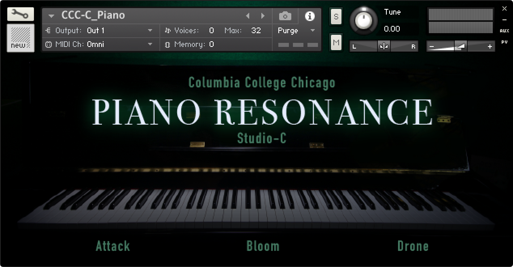
Note
How resource names map to files
- The string “Instrument-Background” must match an image file in resources/pictures without extension in code, but the actual file should exist as PNG or JPG.
- File names are case-sensitive on macOS. Keep names consistent.
Adding a custom instrument icon
Next, we’ll reuse the set_control_par_string() function with slightly different arguments to set the icon image for our instrument.
-
Add the following line just below the one that added the custom background image:
set_control_par_str($INST_ICON_ID, $CONTROL_PAR_PICTURE, "Instrument-Icon" )Your complete
Main.txtscript should now look like this:on init make_perfview set_ui_height_px( 260 ) set_control_par_str($INST_WALLPAPER_ID, $CONTROL_PAR_PICTURE, "Instrument-Background" ) set_control_par_str($INST_ICON_ID, $CONTROL_PAR_PICTURE, "Instrument-Icon" ) end onAnd your instrument should now have a custom icon like this:
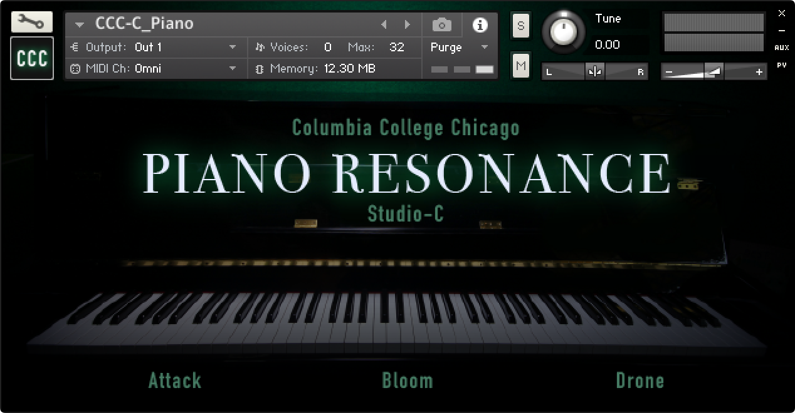
Creating custom sliders/knobs
In KSP, whenever we need to make something (e.g. a variable) we start with declare followed by whatever we are creating. When we want to create a variable we would say something like… declare $my_variable := 100
In this example, declare indicates we are about to create something that does not yet exist within our script. The $ indicates we are create a new variable that will hold an integer. my_variable is the name of the variable. Then:= followed by a value, 100, stores that value inside the newly declared variable.
Next, we’ll declare a new slider. You can find the full list of available ui objects in the KSP reference manual.
Often times, as we’ll do with this instrument, fancy Kontakt Interfaces are just simple sliders, buttons, or XY pads reskinned with custom pictures.
Creating a slider in KSP starts with declare followed by ui_slider . We then, on the same line, create a integer variable that will allows us to get or set the value (position) of the slider and then in parentheses we list the value range of the slider which is usually (0,1000000).
This full line that create a slider usually looks like this:
declare ui_slider $<variable-name> (<minimum value>, <maximum value>)
Now that we understand how to create a slider, let’s actually do it!
Declare the slider
- Inside our
on initcallback and below our existing code add the following line to create our first slider.
declare ui_slider $amp_slider_clean( 0, 1000000 ) Your completed script should now look like this:
on init
make_perfview
set_ui_height_px( 260 )
set_control_par_str($INST_WALLPAPER_ID, $CONTROL_PAR_PICTURE, "Instrument-Background" )
set_control_par_str($INST_ICON_ID, $CONTROL_PAR_PICTURE, "Instrument-Icon" )
declare ui_slider $amp_slider_clean ( 0 , 1000000 )
end onAnd you should now see a small horizontal slider appear on your Kontakt Instrument
Declare a variable to store the I.D. of the slider
Often times, when changing certain attributes of a slider, we need the i.d. number that Kontakt assigns to that slider when it is declared in the on init callback. So it can be useful to store that i.d. in a new variable so that we can more easily reference it later in our script.
- Add the following line of code to your
on initcallback.
declare $amp_slider_clean_id := get_ui_id( $amp_slider_clean )Your complete script should now look like this:
on init
make_perfview
set_ui_height_px( 260 )
set_control_par_str($INST_WALLPAPER_ID, $CONTROL_PAR_PICTURE, "Instrument-Background" )
set_control_par_str($INST_ICON_ID, $CONTROL_PAR_PICTURE, "Instrument-Icon" )
declare ui_slider $amp_slider_clean ( 0 , 1000000 )
declare $amp_slider_clean_id := get_ui_id( $amp_slider_clean )
end onMake/Read Persistent
Making a variable “persistent” means that its value will be stored (make_persistent) and recalled (read_persistent_var) when the instrument or a preset for the instrument is saved and loaded.
- Add the following lines to your
on initcallback:
make_persistent( $amp_slider_clean )
read_persistent_var( $amp_slider_clean )Your updated script should now look like this:
on init
make_perfview
set_ui_height_px( 260 )
set_control_par_str($INST_WALLPAPER_ID, $CONTROL_PAR_PICTURE, "Instrument-Background" )
set_control_par_str($INST_ICON_ID, $CONTROL_PAR_PICTURE, "Instrument-Icon" )
declare ui_slider $amp_slider_clean ( 0 , 1000000 )
declare $amp_slider_clean_id := get_ui_id( $amp_slider_clean )
make_persistent( $amp_slider_clean )
read_persistent_var( $amp_slider_clean )
end onAdding a custom image to our slider
Next, similar to how we add a custom background image and a custom instrument icon, we’ll reskin our slider with a custom image.
For this to work properly, we need two things:
- The image itself (a .png or .jpeg file)
- And a .txt file with the same exact name as the image file
Both of these files need to be in the pictures folder within the Resources folder in the instrument’s build folder.
Take a look at the “White-Knob-54Animations” picture in the Pictures folder. You’ll notice that this is a single image that contain all the steps of the knob being turned from the left to the right. The accompanying .txt file then includes the information Kontakt needs to understand that this file contains 54 animation frames and that they are laid out horizontally. Here is an example of the .txt file. Note that there always needs to be an empty line at the bottom of the .txt file for it to work properly 🤷♂️.
Has Alpha Channel: yes
Number of Animations: 54
Horizontal Animation: yes
Vertical Resizable: no
Horizontal Resizable: no
Fixed Top: 0
Fixed Bottom: 0
Fixed Left: 0
Fixed Right: 0
Now let’s give our slider a custom image.
- Add the following line to your
on initcallback.
set_control_par_str( $amp_slider_clean_id, $CONTROL_PAR_PICTURE, "White-Knob-54Animations" )Your complete script should now look like:
on init
make_perfview
set_ui_height_px( 260 )
set_control_par_str($INST_WALLPAPER_ID, $CONTROL_PAR_PICTURE, "Instrument-Background" )
set_control_par_str($INST_ICON_ID, $CONTROL_PAR_PICTURE, "Instrument-Icon" )
declare ui_slider $amp_slider_clean ( 0 , 1000000 )
declare $amp_slider_clean_id := get_ui_id( $amp_slider_clean )
make_persistent( $amp_slider_clean )
read_persistent_var( $amp_slider_clean )
set_control_par_str( $amp_slider_clean_id, $CONTROL_PAR_PICTURE, "White-Knob-54Animations" )
end onAdjusting the mouse response of the slider
If you drag on your pretty new slider (knob) you’ll notice that it still behaves like a horizontal slider to change this “behaviour” we use the non-string version of set_control_par() function.
We’ll reference the i.d. number of our slider using the $amp_slider_clean_id variable we created earlier and the KSP created variable $CONTROL_PAR_MOUSE_BEHAVIOUR to say what parameter of our slider we want to set, followed by a value that sets how sensitive our slider is to our mouse movements. The greater the number the more sensitive. If it is a positive number it responds to horizontal mouse movements. If it is a negative number it responds to vertical mouse movements.
Here is what we’ll add to our on init callback.
set_control_par($amp_slider_clean_id,$CONTROL_PAR_MOUSE_BEHAVIOUR, -1000 )So your complete script should now look like this:
on init
make_perfview
set_ui_height_px( 260 )
set_control_par_str($INST_WALLPAPER_ID, $CONTROL_PAR_PICTURE, "Instrument-Background" )
set_control_par_str($INST_ICON_ID, $CONTROL_PAR_PICTURE, "Instrument-Icon" )
declare ui_slider $amp_slider_clean ( 0 , 1000000 )
declare $amp_slider_clean_id := get_ui_id( $amp_slider_clean )
make_persistent( $amp_slider_clean )
read_persistent_var( $amp_slider_clean )
set_control_par_str( $amp_slider_clean_id, $CONTROL_PAR_PICTURE, "White-Knob-54Animations" )
set_control_par($amp_slider_clean_id,$CONTROL_PAR_MOUSE_BEHAVIOUR, -1000 )
end onSetting the location of our slider
Kontakt provides two systems for specifying the visual location of user interface elements.
- Pixels
- Grid Units
As a result you’ll see that all the functions provided in KSP for position elements have two variants. Those that end in px (pixels) and those that do not.
I’ve always preferred using pixels because it gives me finer controller. But you may find that working with grid units is faster or easier. So try both!
To position the location of our slider using pixels we can add the following line of code to our on init callback.
move_control_px( $amp_slider_clean, 112, 170 )The arguments for this function are:
- The name of the ui element we want to move (not the i.d.)
- The x pixel location
- The y pixel location
So your complete script should now look like this:
on init
make_perfview
set_ui_height_px( 260 )
set_control_par_str($INST_WALLPAPER_ID, $CONTROL_PAR_PICTURE, "Instrument-Background" )
set_control_par_str($INST_ICON_ID, $CONTROL_PAR_PICTURE, "Instrument-Icon" )
declare ui_slider $amp_slider_clean ( 0 , 1000000 )
declare $amp_slider_clean_id := get_ui_id( $amp_slider_clean )
make_persistent( $amp_slider_clean )
read_persistent_var( $amp_slider_clean )
set_control_par_str( $amp_slider_clean_id, $CONTROL_PAR_PICTURE, "White-Knob-54Animations" )
set_control_par($amp_slider_clean_id,$CONTROL_PAR_MOUSE_BEHAVIOUR, -1000 )
move_control_px( $amp_slider_clean, 112, 170 )
end onExposing our slider for DAW automation
If you want to be able to automate this slider inside a DAW. You can use the following function to first set the order the slider should appear in the list of available automation (zero-based) and then the name that it should appear with.
set_control_par($amp_slider_clean_id, $CONTROL_PAR_AUTOMATION_ID, 0 )
set_control_par_str($amp_slider_clean_id, $CONTROL_PAR_AUTOMATION_NAME, "Clean piano volume." )Your completed script should now look like this:
on init
make_perfview
set_ui_height_px( 260 )
set_control_par_str($INST_WALLPAPER_ID, $CONTROL_PAR_PICTURE, "Instrument-Background" )
set_control_par_str($INST_ICON_ID, $CONTROL_PAR_PICTURE, "Instrument-Icon" )
declare ui_slider $amp_slider_clean ( 0 , 1000000 )
declare $amp_slider_clean_id := get_ui_id( $amp_slider_clean )
make_persistent( $amp_slider_clean )
read_persistent_var( $amp_slider_clean )
set_control_par_str( $amp_slider_clean_id, $CONTROL_PAR_PICTURE, "White-Knob-54Animations" )
set_control_par($amp_slider_clean_id,$CONTROL_PAR_MOUSE_BEHAVIOUR, -1000 )
move_control_px( $amp_slider_clean, 112, 170 )
set_control_par($amp_slider_clean_id, $CONTROL_PAR_AUTOMATION_ID, 0 )
set_control_par_str($amp_slider_clean_id, $CONTROL_PAR_AUTOMATION_NAME, "Clean piano volume." )
end onDeclaring all three sliders
There are plenty of other parameters we could change to further customize our slider, so you should definitely spend some time reading the KSP reference manual to learn/discover more of those things. But for our instrument this is enough. So now all we need to do is create our two additional slider for controlling the two other sounds.
- Copy and past the full block of code we used to create and customize our first volume slider.
- Replace all the occurrences of “clean” with “resonant”.
- Repeat steps one and two to create the “infinite” volume slider
- Use each slider
move_control_px()function to move them into their correct position.
Here is what your on init callback should look like after declaring all three sliders:
$amp_slider_clean$amp_slider_resonant$amp_slider_infinite
on init
make_perfview {makes a performance view for this script}
set_ui_height_px( 260 )
set_control_par_str($INST_WALLPAPER_ID, $CONTROL_PAR_PICTURE, "Instrument-Background" )
set_control_par_str($INST_ICON_ID, $CONTROL_PAR_PICTURE, "Instrument-Icon" )
declare $active_group := 0
declare ui_slider $amp_slider_clean( 0, 1000000 )
declare $amp_slider_clean_id := get_ui_id( $amp_slider_clean )
set_control_par( $amp_slider_clean_id, $CONTROL_PAR_DEFAULT_VALUE, 666666 )
make_persistent( $amp_slider_clean )
read_persistent_var( $amp_slider_clean )
set_control_par_str( $amp_slider_clean_id, $CONTROL_PAR_PICTURE, "White-Knob-54Animations" )
set_control_par($amp_slider_clean_id,$CONTROL_PAR_MOUSE_BEHAVIOUR, -1000 )
move_control_px( $amp_slider_clean, 112, 170 )
set_control_par($amp_slider_clean_id, $CONTROL_PAR_AUTOMATION_ID, 0 )
set_control_par_str($amp_slider_clean_id, $CONTROL_PAR_AUTOMATION_NAME, "Clean piano volume." )
declare ui_slider $amp_slider_resonant( 0, 1000000 )
declare $amp_slider_resonant_id := get_ui_id( $amp_slider_resonant )
set_control_par( $amp_slider_resonant_id, $CONTROL_PAR_DEFAULT_VALUE, 0 )
make_persistent( $amp_slider_resonant )
read_persistent_var( $amp_slider_resonant )
set_control_par_str( $amp_slider_resonant_id, $CONTROL_PAR_PICTURE, "White-Knob-54Animations" )
set_control_par($amp_slider_resonant_id,$CONTROL_PAR_MOUSE_BEHAVIOUR, -1000 )
move_control_px( $amp_slider_resonant, 297, 170 )
set_control_par($amp_slider_resonant_id, $CONTROL_PAR_AUTOMATION_ID, 1 )
set_control_par_str($amp_slider_resonant_id, $CONTROL_PAR_AUTOMATION_NAME, "Resonant piano volume." )
declare ui_slider $amp_slider_infinite( 0, 1000000 )
declare $amp_slider_infinite_id := get_ui_id( $amp_slider_infinite )
set_control_par( $amp_slider_infinite_id, $CONTROL_PAR_DEFAULT_VALUE, 0 )
make_persistent( $amp_slider_infinite )
read_persistent_var( $amp_slider_infinite )
set_control_par_str( $amp_slider_infinite_id, $CONTROL_PAR_PICTURE, "White-Knob-54Animations" )
set_control_par($amp_slider_infinite_id,$CONTROL_PAR_MOUSE_BEHAVIOUR, -1000 )
move_control_px( $amp_slider_infinite, 483, 170 )
set_control_par($amp_slider_infinite_id, $CONTROL_PAR_AUTOMATION_ID, 2 )
set_control_par_str($amp_slider_infinite_id, $CONTROL_PAR_AUTOMATION_NAME, "Drone piano volume." )
end onScripting Round Robins
Next, we’ll create the logic within our script to handle switching between the round robin groups for the “Clean” and “Resonant” groups. To accomplish this we’ll need a new callback (on note) and two new functions: allow_groups() and disallow_groups()
on note
Note callback, executed whenever a MIDI Note On message is received.
Examples
on note
message("Note Number: " & $EVENT_NOTE & " - Velocity: " & $EVENT_VELOCITY)
end onQuery note properties.
allow_group(<group-index>)
Allows the specified group, i.e. makes it available for playback.
Remarks
- This command is only available in
on noteandon releasecallbacks. - The numbering of the group index is zero-based, i.e. index of the first instrument group is 0.
- The group allow states can only be changed if the voice is not running.
Examples
on note
disallow_group($ALL_GROUPS)
allow_group(0)
end onOnly the first group will play back.
disallow_group(<group-index)
Disallows the specified group, i.e. makes it unavailable for playback.
- This commmand is only available in
on noteandon releasecallbacks. - The numbering of the group index is zero-based, i.e. index of the first instrument group is 0.
- The group disallow states can only be changed if the voice is not running.
Examples
on init
declare $count
declare ui_menu $groups_menu
add_menu_item($groups_menu, "Play All", -1)
while ($count < $NUM_GROUPS)
add_menu_item($groups_menu, "Mute: " & group_name($count), $count)
inc($count)
end while
end on
on note
if ($groups_menu # -1)
disallow_group($groups_menu)
end if
end onMuting one specific group of an instrument.
find_group(<group-name>)
Returns the group index for the specified group name
Remarks
If no group with the specified name is found, this command will return the value zero. This can cause problems as this is the group index of the first group, so be careful when using this command. As a result, Kontakt 7.1 introduced new commands to retrieve group, modulator and modulation target indices:
These commands will return $NI_NOT_FOUND when the queried object is not found. Introduction of these commands also deprecates the usage of find_group(), find_mod() and find_target()!
The general idea of what we’ll do is…
- Use the
on notecallback to trigger our new code whenever a note is received by our instrument. - The
disallow_group()function to first turn off all the groups using the KSP provided variable$ALL_GROUPS - And finally the
allow_groups()function to only enable the groups the we want by finding the group’s i.d. number via thefind_group()and the name of each group. This final step will require some control statements and additional variables for use to track the progress through each round robin sequence.
In a previous video series I explored a similar approach to scripting round robins.
Storing Group I.D.s in Arrays
Let’s start scripting our round robins system by first creating variables to store the i.d. number of all our groups. Arrays are a great variable type for storing collection of data like this, so we’ll create two integer arrays for our two round robin groups: %clean_groups and %resonant_groups
Like before we create our new variables with declare followed by the name of the variable (clean_groups) preceded by % which indicates that this will be a collection of integers and in brackets the number of integers that will be store in this array.
declare %clean_groups[3]
declare %resonant_groups[3]After we declare our arrays we can start storing data inside them. To do this you have to start by indicating which array variable you want to store data within and then in brackets the index of the specific value within the array you want to set. In the code that follow you can see that we first declare each array than assign the group i.d. number of each of our groups to the three slots in each array.
-
Add the following lines of code to your
on initcallbackdeclare %clean_groups[3] %clean_groups[0] := find_group( "CleanRR1" ) %clean_groups[1] := find_group( "CleanRR2" ) %clean_groups[2] := find_group( "CleanRR3" ) declare %resonant_groups[3] %resonant_groups[0] := find_group( "ResonantRR1" ) %resonant_groups[1] := find_group( "ResonantRR2" ) %resonant_groups[2] := find_group( "ResonantRR3" )Your completed script should now look like this:
on init make_perfview {makes a performance view for this script} set_ui_height_px( 260 ) set_control_par_str($INST_WALLPAPER_ID, $CONTROL_PAR_PICTURE, "Instrument-Background" ) set_control_par_str($INST_ICON_ID, $CONTROL_PAR_PICTURE, "Instrument-Icon" ) declare $active_group := 0 declare ui_slider $amp_slider_clean( 0, 1000000 ) declare $amp_slider_clean_id := get_ui_id( $amp_slider_clean ) set_control_par( $amp_slider_clean_id, $CONTROL_PAR_DEFAULT_VALUE, 666666 ) make_persistent( $amp_slider_clean ) read_persistent_var( $amp_slider_clean ) set_control_par_str( $amp_slider_clean_id, $CONTROL_PAR_PICTURE, "White-Knob-54Animations" ) set_control_par($amp_slider_clean_id,$CONTROL_PAR_MOUSE_BEHAVIOUR, -1000 ) move_control_px( $amp_slider_clean, 112, 170 ) set_control_par($amp_slider_clean_id, $CONTROL_PAR_AUTOMATION_ID, 0 ) set_control_par_str($amp_slider_clean_id, $CONTROL_PAR_AUTOMATION_NAME, "Clean piano volume." ) declare ui_slider $amp_slider_resonant( 0, 1000000 ) declare $amp_slider_resonant_id := get_ui_id( $amp_slider_resonant ) set_control_par( $amp_slider_resonant_id, $CONTROL_PAR_DEFAULT_VALUE, 0 ) make_persistent( $amp_slider_resonant ) read_persistent_var( $amp_slider_resonant ) set_control_par_str( $amp_slider_resonant_id, $CONTROL_PAR_PICTURE, "White-Knob-54Animations" ) set_control_par($amp_slider_resonant_id,$CONTROL_PAR_MOUSE_BEHAVIOUR, -1000 ) move_control_px( $amp_slider_resonant, 297, 170 ) set_control_par($amp_slider_resonant_id, $CONTROL_PAR_AUTOMATION_ID, 1 ) set_control_par_str($amp_slider_resonant_id, $CONTROL_PAR_AUTOMATION_NAME, "Resonant piano volume." ) declare ui_slider $amp_slider_infinite( 0, 1000000 ) declare $amp_slider_infinite_id := get_ui_id( $amp_slider_infinite ) set_control_par( $amp_slider_infinite_id, $CONTROL_PAR_DEFAULT_VALUE, 0 ) make_persistent( $amp_slider_infinite ) read_persistent_var( $amp_slider_infinite ) set_control_par_str( $amp_slider_infinite_id, $CONTROL_PAR_PICTURE, "White-Knob-54Animations" ) set_control_par($amp_slider_infinite_id,$CONTROL_PAR_MOUSE_BEHAVIOUR, -1000 ) move_control_px( $amp_slider_infinite, 483, 170 ) set_control_par($amp_slider_infinite_id, $CONTROL_PAR_AUTOMATION_ID, 2 ) set_control_par_str($amp_slider_infinite_id, $CONTROL_PAR_AUTOMATION_NAME, "Drone piano volume." ) declare %clean_groups[3] %clean_groups[0] := find_group( "CleanRR1" ) %clean_groups[1] := find_group( "CleanRR2" ) %clean_groups[2] := find_group( "CleanRR3" ) declare %resonant_groups[3] %resonant_groups[0] := find_group( "ResonantRR1" ) %resonant_groups[1] := find_group( "ResonantRR2" ) %resonant_groups[2] := find_group( "ResonantRR3" ) end on
A few additional variables for use in the While loops
We will repeat the same operation for multiple groups (three round-robin slots). A while loop needs a counter to track which element we’re on. We’ll use a single integer variable named $count.
Declare $count once in on init so it’s available to any callback that needs a loop. We’ll reset it inside each callback before use.
Add this line to the bottom of your on init callback (after the arrays):
declare $count
Notes
$countwill start at0, increment by1, and stop when it reaches3.- We reassign
$count := 0inside callbacks so each loop starts fresh. - Declaring once in
on initavoids redeclaration errors and keeps scope simple.
Adding round robin logic in the on note callback
on note runs whenever a MIDI Note-On is received. This is the correct place to decide which groups are allowed to sound for that specific note.
Order matters: change allow/disallow states before the voice starts. We first disable everything for a clean state, then enable exactly the groups we want, then advance the round-robin index for next time.
Add this new callback after your on init callback:
on note
disallow_group($ALL_GROUPS)
allow_group(%clean_groups[$active_group])
allow_group(%resonant_groups[$active_group])
allow_group(find_group("Infinite"))
if ($active_group >= 2)
$active_group := 0
else
$active_group := $active_group + 1
end if
end on
What each line does
disallow_group($ALL_GROUPS)— mutes every group so only deliberate choices can sound. Prevents bleed-through from previous notes.allow_group(%clean_groups[$active_group])— enables the current Clean round-robin group.%clean_groupsis your array of three Clean group IDs;$active_groupselects index0,1, or2.allow_group(%resonant_groups[$active_group])— enables the matching Resonant round-robin group at the same index, so Clean/Resonant advance together.allow_group(find_group("Infinite"))— ensures the Infinite layer is always available alongside the RR layers.- The
if / elseresets$active_groupback to0after reaching2, producing the sequence0 → 1 → 2 → 0 → ….
Why not random?
No good reason. If you want a randomized variant later, you can set $active_group := random(0,2).
Common pitfalls
- A misspelled group name will make
find_group()return0, which is also the first group. Verify names in the Group Editor. - If you hear silence, temporarily comment out
disallow_group($ALL_GROUPS)to confirm mapping, then fix names and re-enable.
Linking the Clean volume slider to the engine
on ui_control(<control>) runs whenever the control’s value changes.
Because only one Clean RR group is active at the moment of playback—but we don’t know which one it will be on the next note—we apply the slider value to all Clean RR groups each time the slider moves. This keeps the active group’s level correct as the RR index advances.
Add this callback below the on note callback:
on ui_control( $amp_slider_clean )
$count := 0
while ($count < 3)
set_engine_par( $ENGINE_PAR_VOLUME, $amp_slider_clean, %clean_groups[$count], 0, 0 )
$count := $count + 1
end while
end on
What each piece means
$count := 0— start at the first RR slot.while ($count < 3)— iterate RR indices0, 1, 2.set_engine_par($ENGINE_PAR_VOLUME, $amp_slider_clean, %clean_groups[$count], 0, 0)- Parameter:
$ENGINE_PAR_VOLUME→ we’re adjusting group amplifier volume. - Value:
$amp_slider_clean→ KSP expects 0…1,000,000. Your slider already uses this range. - Group:
%clean_groups[$count]→ the group ID for the current Clean RR slot. - Slot:
0→ default amplifier/volume slot at the group level. - Generic:
0→ standard context (no special bus/mod routing here).
- Parameter:
$count := $count + 1— move to the next RR slot and repeat.
Behavior
Turning the Clean knob updates all three Clean RR groups immediately. Whichever one is active when a note triggers will play at the knob’s selected level.
Linking the Resonant volume slider to the engine
This repeats the Clean pattern for the Resonant RR array. Same loop, different array and control.
Add this callback below the Clean callback:
on ui_control( $amp_slider_resonant )
$count := 0
while ($count < 3)
set_engine_par( $ENGINE_PAR_VOLUME, $amp_slider_resonant, %resonant_groups[$count], 0, 0 )
$count := $count + 1
end while
end on
Notes
- This ensures the Resonant layer’s current and future RR hits reflect the slider’s level.
- Keep the two callbacks parallel for readability and easier debugging.
Linking the Infinite volume slider to the engine
The Infinite layer uses a single group and is not part of the round-robin cycle. We can target it directly without a loop.
Add this callback below the previous one:
on ui_control( $amp_slider_infinite )
set_engine_par( $ENGINE_PAR_VOLUME, $amp_slider_infinite, find_group( "Infinite" ), 0, 0 )
end on
Notes
- Using
find_group("Infinite")is sufficient here; there’s only one target. - If you later rename the group, update the string to match exactly (case-sensitive on macOS resource paths).
✅ Quick verification checklist
- RR cycle: tapping the same key repeats with three distinct alternations for Clean and Resonant.
- Clean slider: adjusts only Clean content; value persists across snapshots/reloads (from earlier persistence setup).
- Resonant slider: adjusts only Resonant content; persists as above.
- Infinite slider: directly controls the bed layer level; audible even when RR layers are low.
- Automation: three controls appear with the automation IDs and names you set earlier.
Preparing for Distribution
Note
However, developers ofter choose to clean up their instrument folder and reduce the size and accessibility of their samples before sending it out into the world.
Creating the .nkr (”Resources”) file.
Note
⚠️ The screenshots below are from a different Kontakt instrument, but the process is the same.
- Return to the “Instrument Options” window and click the “Create” button near the bottom right corner of the “Instrument” tab.
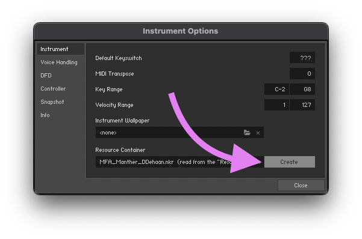
- Select the existing .nkr file within your instrument’s folder, then click “Save”.
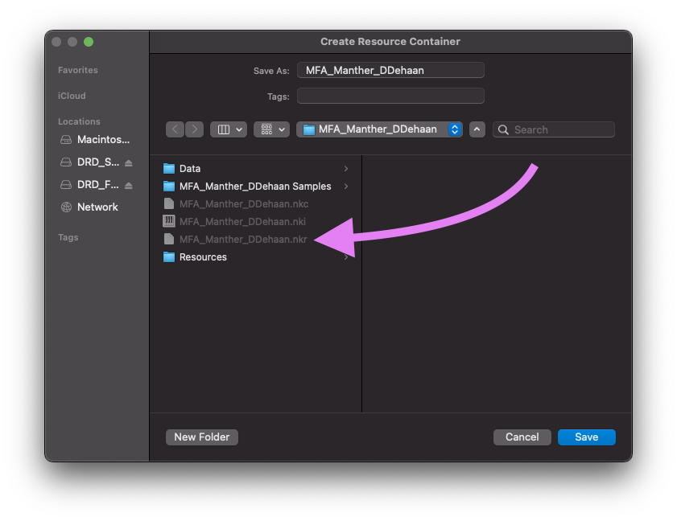
- When prompted, confirm that you want to replace the existing .nkr file.
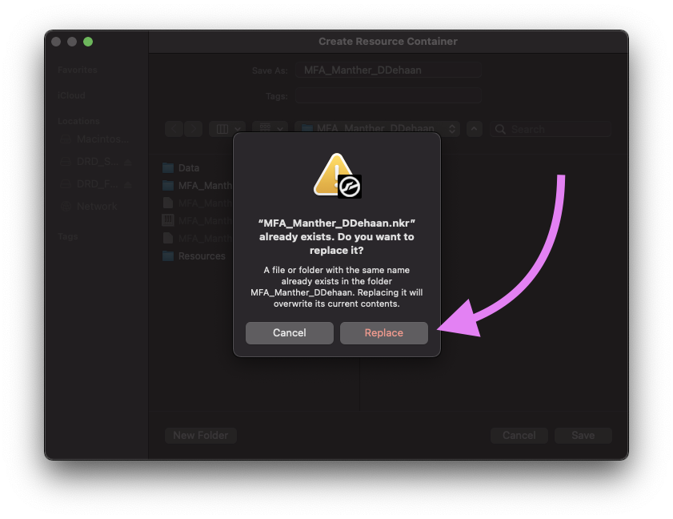
- You should then see a report that confirms that all four of our pictures and the script we had saved within the original Resource folder has been packaged inside of the new .nkr file.
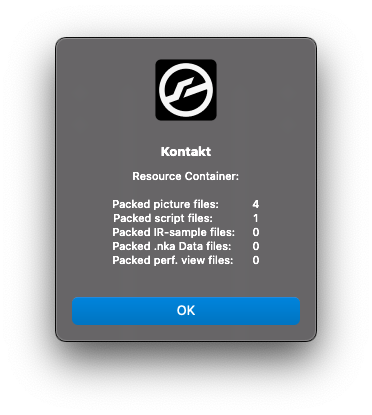
- You may now close the “Instrument Options” window and save your instrument.
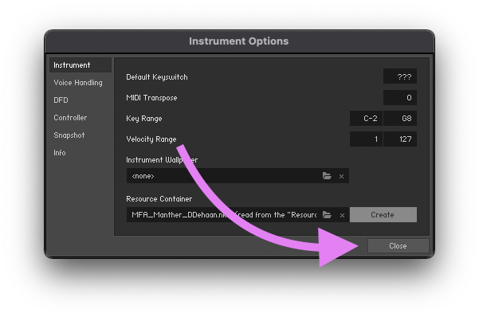
- To test that the new .nkr file has everything our instrument needs, we can change the name of the Resource folder to something else. I typically rename it to simply “_Resources”. Then reload your instrument. If your instrument looks the same, then everything worked correctly. If something doesn’t look correct, rename the “_Resources” folder back to “Resources” and try reloading your instrument then recreating the .nkr file.
Sample compression
Note
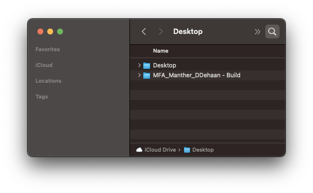
Then I’ll create a new folder with the name of my instrument. I’ll then place everything inside this folder that I plan to distribute with my instrument.
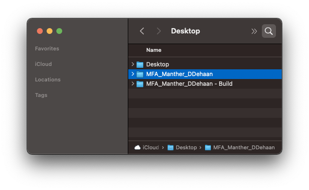
- Back inside Kontakt save your instrument. This time, however, save it to the new folder that we just created and save both the Patch and the Samples. Also, check the box to have Kontakt compress all of your samples. This will both decrease the overall size of your samples, but also make it more difficult for someone to use your samples outside of your instrument.
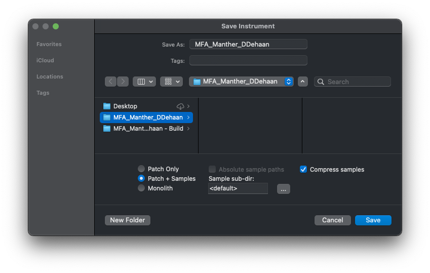
-
Be certain that Kontakt has the instrument loaded that we just saved by first unloading the current instrument, and then reloading the new .nki file that you just saved by dragging and dropping it from a Finder window.
-
Next, copy and past the .nkr file from the “Build” folder into the new instrument’s folder.
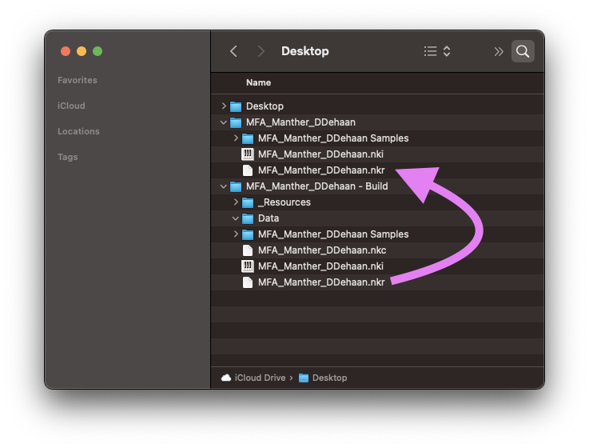
- Then in Kontakt, open the “Instrument Options” window again and change the referenced .nkr file to be the new copy that is located within the new instrument folder by clicking on the folder icon.
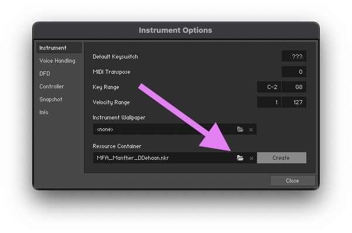
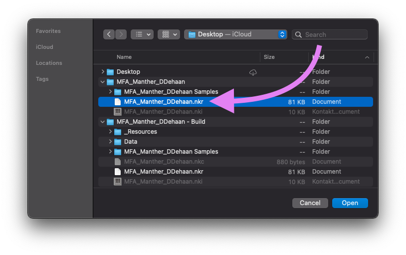
- You can now resave your instrument, but be sure to only resave the patch. You do not need to save or compress the samples the again.
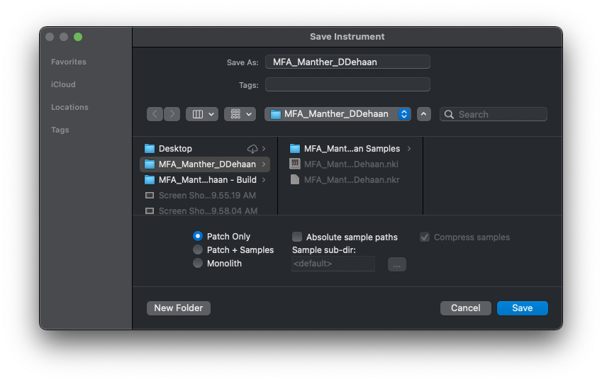